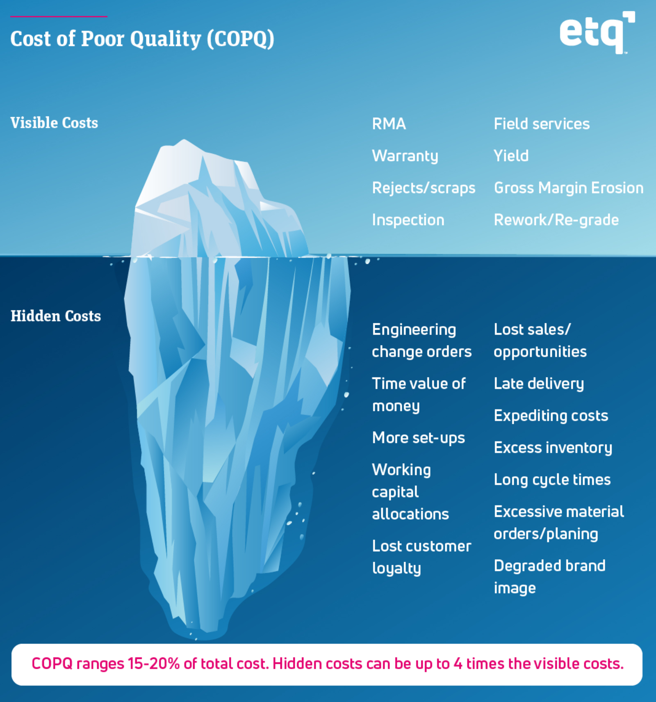

Six Sigma Process Management: Define Phase

Define Phase
A core to Six Sigma are the steps Define, Measure, Analyze, Improve and Control (DMAIC). For this module we will be discussing the define phase. In this phase we will discuss how the voice of the customer (VoC) leads to critical to quality (CtQ) measures which lead to functional requirements. These in turn lead to identifying what is critical to the process (CtP) and understanding the cost of poor quality (CoPQ).
Voice of the Customer (VoC)
Voice of the Customer (VOC) seems obvious. After all, we all know what the customer wants. Or, do we? The customer’s perspective must be foremost in our mind throughout the Six Sigma project cycle. Consider the customer's perspective in relation to the following items:
- Features
- Does the process provide what the customers expect and need?
- How do you know?
- Integrity
- Is the relationship with the customer centered on trust?
- How do you know?
- Delivery
- Does the process meet the customer’s time frame?
- How do you know?
- Expense
- Does the customer perceive value for cost?
- How do you know?
Who is the Customer?
Different types of customers require different types of interactions. To identify customer and supplier requirements we must first define who the customers are. Customers can be internal, or those within your organization who receive or depend on the output of your work. Customers can also be external. External customers can be either direct, those who receive the output of your services (they generally are the source of your revenue), or indirect, those who do not receive or pay for the output of your services but have a vested interest in what you do (government agencies).
Critical to Quality (CtQ)
Knowing your customer is more than just a handshake. It is necessary to clearly understand their needs. In Six Sigma this is called understanding the Critical to Quality (CtQ) customer characteristics. Critical to Quality parameters are measures that we use to capture the voice of the customer properly. It is also referred to in some literature as Critical to Customer (CtC). CtQ ’s can be vague and difficult to define; the customer may identify a requirement that is difficult to measure directly so it will be necessary to break down what is meant by the customer into identifiable and measurable. Consider how your customers might differ regarding the following product and service expectations:
| Product expectations: | Service expectations: |
|
|
Sometimes it is a bit challenging to ascertain what the customer means when they attempt to express their desires. For example if a customer says "I want the controls to feel nice" for an automobile, what might that mean to the design engineer?
Steps to Developing Critical to Quality
- Step 1: Identify Customers
- Listing
- Segmentation
- Prioritization
- Step 2: Capture VoC
- Review existing performance
- Determine gaps in what you need to know
- Select tools that provide data on gaps
- Collect data on the gaps
- Step 3: Validate CtQs
- Translate VoC to CtQs
- Prioritize the CtQs
- Set Specified Requirements
- Confirm CtQs with customer
functional requirements
[content]
Critical to Process
[content]
Cost of Poor Quality (CoPQ)
As a Six Sigma Belt, one of your tasks will be to estimate Cost of Poor Quality (CoPQ) for your process. Through your process exploration and project definition work you will develop a refined estimate of the CoPQ in your project, but realize that calculating CoPQ is iterative and will change as you learn more. This project CoPQ represents the financial opportunity of your team’s improvement effort. The essence of CoPQ is understanding the concepts of quality cost in relation to external entities, internal entities, prevention, and appraisal. Internal CoPQ includes items such as the quality control department expenses, inspection expenses, and quarantined inventory. Prevention CoPQ includes items such as error proofing device costs, supplier certification costs, and design for Six Sigma. External CoPQ includes items such as warranty expenses, customer complaint related costs, and customer charge back costs. Detection CoPQ involves items such as supplier audits expenses, cost of monitoring and sorting incoming parts, or material repair costs. CoPQ helps us understand the financial impact of problems created by defects. Note, however, that a significant portion of CoPQ from any defect comes from effects that are difficult to quantify and must be estimated. Costs we are more likely to be able to directly attribute are visible costs like product rejects, return merchandise authorization (RMA), warranty expenses, inspection, and rework. Less visible and less directly attributable costs (sometimes known as hidden costs) are things like lost sales, long cycle times, excess inventory, more set ups, late deliveries, cost of expediting, excessive material orders, lost customer loyalty, and the like.
(ETQ, 2019)
It is important to note that CoPQ is a symptom, not a defect. CoPQ projects fix defects with the intent of improving symptoms and decreasing related costs. Some CoPQ hard savings might include labor savings, cycle time improvements, scrap reduction, and inventory carrying costs. Some CoPQ soft savings might include gaining sales, increased customer loyalty, strategic savings, and preventing regulatory fines. Ultimately in almost any process improvement endeavor the intention is to make a better product more quickly and at less expense.
If you make the process better by eliminating defects you will make it faster. If you choose to make the process faster, you will have to eliminate defects to be as fast as you can be. If you make the process better or faster, you will necessarily make it cheaper. The metrics for all Six Sigma projects fall into one of these three categories.
Waste
seven classic wastes (overproduction, inventory, defects, over-processing, waiting, motion and transportation)
[content]
Business case/stakeholder analysis
Business Case
The business case communicates the need for the project in terms of meeting business objectives.
The components are:
- Output unit (product/service) for external customer
- Primary business measure of output unit for project
- Baseline performance of primary business measure
- Gap in baseline performance of primary business measure from business objective
Business case example:
During fiscal year 2021, the first time call resolution efficiency for new customer hardware setup was 86%. This represents a gap of 7% points from the industry standard of 93% that amounts to $2,000,000 of annualized cost impact.
Fill in the Blanks for Your Project:
During ___________________________________ , the ____________________ for
(Period of time for baseline performance) (Primary business measure)
________________________ was _________________ .
(A key business process) (Baseline performance)
This gap of ____________________________
(Business objective target vs. baseline)
from ___________________ represents ____________________ of cost impact.
(Business objective)(Cost impact of gap)
Project Charter
The Project Charter expands on the Business Case, it clarifies the projects focus and measures of project performance and is completed by the Six Sigma Belt. Basically, you migrate the business case in to a problem statement and build information around it. Components include:
- The Problem
- Project Objective and Scope
- Project Metrics (Primary & Secondary)
- Graphical Display of Project Metrics (Primary & Secondary)
- Standard project information
- Project & Process Owner names
- Start date & desired End date
- Division or Business Unit
- Supporting Master Black Belt (Mentor)
- Team Members
Project Charter Items
Project charters typically contain the following items:
- Problem Statement. Articulates the pain of the defector errorin the process.
- Objective Statement. States how much of an improvement is desired from the project.
- Scope. Articulates the boundaries of the project.
- Primary Metric. The actual measure of the defect or error in the process.
- Secondary Metric(s). Measures of potential consequences (+ / -) as a result of changes in the process.
- Charts. Graphical displays of the Primary and Secondary Metrics over a period of time.
Stakeholders
Stakeholde are individuals who are impacted by your actions. This includes, but is not necessarily limited to the project sponsor, the project manager, the project team, support staff, customers, suppliers and even pponents to the project. In most cases we want to do all we can to satisfy stakeholders, particularly those who are our customers.
References
ETQ (2019). Why the hidden costs of poor quality are more dangerous than the visible ones. Retrieved July 9, 2021 from https://www.etq.com/blog/why-the-hidden-costs-of-poor-quality-are-more-dangerous-than-the-visible-ones/